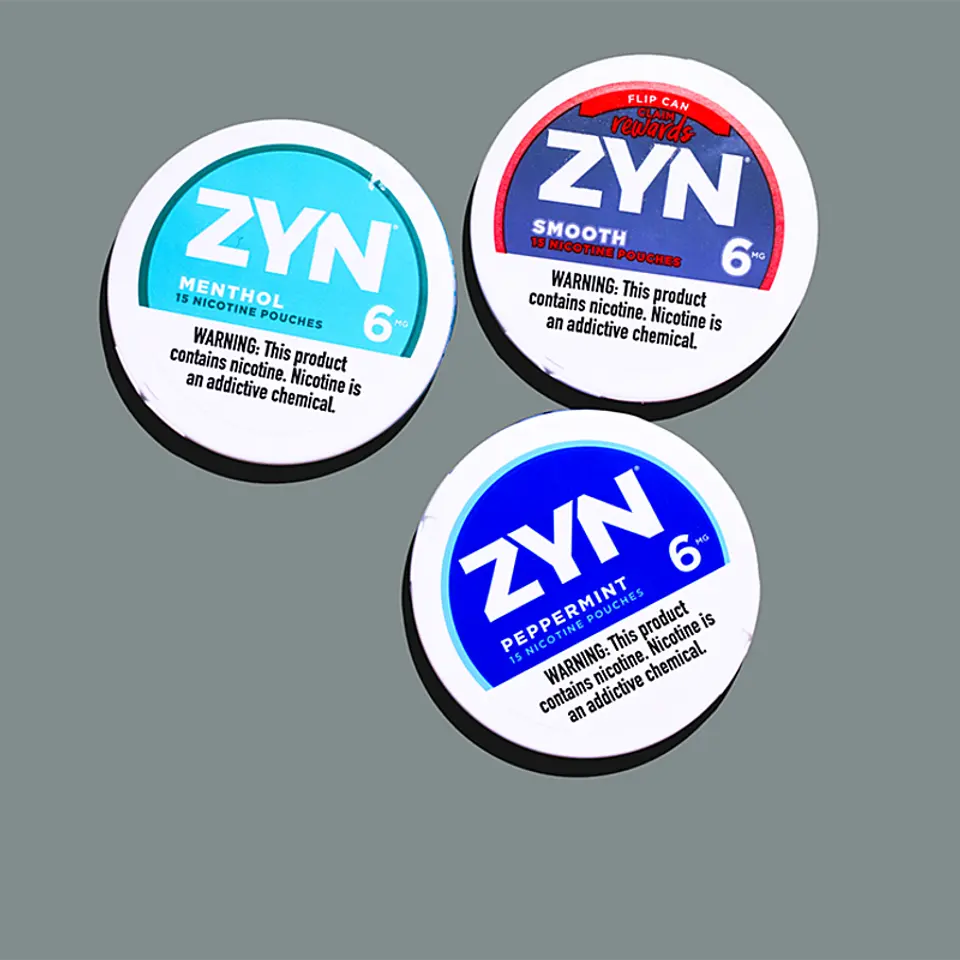

01
【孫正義の一手】PayPayが賭ける「波乱の取引所」
発行日時：2026年8月25日 05:30 JST ・ NewsPicks編集部
あなたに関係ありそうな理由
決済アプリが暗号資産を含む資産形成の入口まで広がると、お金の管理・比較のしかたと金融規制の重要性が変わるためです。
概要
PayPayがバイナンス・ジャパンに出資し、決済からデジタル資産までの導線を広げようとする構図を追った記事です。PayPayは2025年9月、第三者割当増資を通じて同社の40％を取得したとされ、米証券取引委員会向けの年次報告書から算出した出資額は約117億円です。逆算すれば出資後の企業価値は約291億円になる計算で、契約には追加取得を誠実に協議する条項もある一方、連結子会社化には金融庁との事前協議が必要で、実現は保証されていません。記事はこの40％を、単純な支配の不足ではなく、規制・債務・運営責任を全面的に引き受けずに協業の実利を取る持分法の位置とも読めると整理します。バイナンスは2018年と2021年に金融庁から警告を受けた後、2022年に登録業者のサクラエクスチェンジビットコインを買収し、2023年に日本向けサービスを始めました。PayPayは2025年11月からPayPayマネーやポイントで暗号資産を買える機能を広げ、アプリ内から取引所へ送客する設計を進めています。バイナンス・ジャパンは2026年上期の円建てビットコインとイーサリアムの取引量で国内首位だと説明しており、PayPay側は即時入金なども含めて既存利用者を呼び込む余地を見込んでいます。記事が示す約7500万人の登録ユーザーは、交換業者にとって大きな顧客接点です。背景には、暗号資産の売買そのものより、決済、資産形成、投資、デジタル資産を一つの体験につなぐ競争があります。表示コメントでも、暗号資産の価格に賭ける投資というより金融UXの戦略投資だという見方と、そもそも暗号資産が通貨より投資対象にとどまるのではないかという懐疑が並びました。利用者にとって重要なのは、ポイント連携の便利さだけでなく、価格変動、交換業者のリスク、資産の保管方法、規制変更を別々に理解できることです。暗号資産交換業者の画面を経由する以上、利用者保護と説明の責任を誰が負うのかも明確でなければなりません。決済の強さが投資商品の安全性を保証するわけではありません。PayPayとバイナンスの連携がどこまで進むか、追加取得の協議や制度変更とともに見る必要があります。
仕事や会話で使える一言
出資比率を見るときは、支配できる範囲だけでなく、どこまで責任を引き受ける設計かも見る。
NewsPicks原文を読む
02
マルボロの株に買い殺到、「新型たばこ」の衝撃
発行日時：2026年8月25日 05:30 JST ・ NewsPicks編集部

あなたに関係ありそうな理由
既存の強いブランドを持つ企業でも、商品の形を変えながら成長と健康・規制上の課題を同時に抱えることが分かるためです。
概要
「マルボロ」で知られるフィリップモリス・インターナショナルの株価上昇を、煙を出さないニコチン製品の伸びから読み解く記事です。同社株は7月22日の決算後に上げ足を速め、同28日に過去最高の200ドルを付けました。中心にあるのが、たばこ葉を使わず、熱源も不要な口腔用ニコチンパウチ「ZYN」です。利用者は袋状の製品を口の中に置き、粘膜からニコチンを摂取します。紙巻きたばこや加熱式製品と異なり煙や灰を出さないため、従来の喫煙環境に依存しない商品です。記事によれば、米食品医薬品局は6月30日、紙巻きたばこに比べて有害成分への曝露を低くできるという趣旨の「リスク低減」表示を認めました。ただし、これは安全性を保証する意味ではなく、ニコチン依存や心血管系への影響といった懸念をなくすものでもありません。フィリップモリスはコロラド州で約12億ドルを投じてZYNの生産能力を増やす計画です。2026年4〜6月期の売上高は112億ドルで前年同期比10.4％増、無煙製品の売上構成比は42％、営業利益は約45億ドルで22％増と記事は伝えます。ZYNは約60市場で販売され、米国のニコチンパウチ市場で57％のシェアを持つとされます。記事が紹介する市場予測では、ニコチンパウチ市場は2025年の69億ドルから2026年には90億ドル、2033年には424億ドルへ拡大する見通しです。また記事は、世界のIQOS利用者が3500万人超で、日本が1000万人超を占めると伝えます。既存の加熱式製品を持つ顧客に口腔用製品をどう位置づけるかも、同社の成長戦略の論点です。日本ではたばこ葉を含む製品に独自の法規制があり、海外の商品設計をそのまま持ち込めるわけでもありません。ZYNは前年7月から東京で売られてきました。表示コメントでは、臭いや副流煙を減らせる可能性を評価する声と、目立たず使えるからこそ接触回数や依存を増やす恐れがあるという指摘が交錯しました。企業が掲げる「煙のない社会」は、非喫煙者を新たな依存へ引き込まないこと、既存喫煙者のリスクをどう扱うかまで問われます。株価と販売成長だけでなく、規制、若年層への影響、健康上の根拠を分けて追うべきニュースです。
仕事や会話で使える一言
「害が少ない」と「安全」は別の言葉。新市場では、その差を曖昧にしないことが信頼になる。
NewsPicks原文を読む
03
米、対イラン二次制裁を拡大 即時の発動には踏み切らず
発行日時：2026年8月25日 02:31 JST ・ Reuters
あなたに関係ありそうな理由
制裁は遠い外交ニュースに見えても、資源、物流、決済、取引先の選別を通じて企業活動と市場に影響し得るためです。
概要
米トランプ政権が、イランと取引する国や企業に関係断絶を促し、応じなければ二次制裁の対象にする方針を示した記事です。ただし、発表時点で財務省は特定の国や主要金融機関へ直ちに広範な制裁を発動したわけではありません。記事はこの措置を「経済版Dデー」の一環として伝え、ベッセント財務長官がイランの金融ネットワークを標的に、デジタル資産、テクノロジー、金、航空、海運などを対象に挙げたと説明します。同時に、個人・企業・船舶など計60件が制裁対象へ追加されましたが、中国の金融機関は含まれませんでした。イラン産原油の最大の買い手である中国にどこまで実効性のある圧力をかけるかが焦点になります。二次制裁は、対象国との直接取引を禁じるだけではなく、取引を続ける第三国の企業や金融機関にドル決済などで不利益を与え得るため、資源や物流の商流全体に影響します。実際に強化されれば、企業は直接の取引先だけでなく、船舶、貿易金融、最終的な受益者まで確認を迫られます。制裁の対象が狭いままなら、イランと取引する企業は様子見を続ける余地があります。反対に主要な銀行や大口の買い手へ制限が及べば、名簿に載っていない企業にも取引停止の連鎖が生まれ得ます。米国の警告だけでは、商流は一律には変わりません。記事は、米国が強い条件を示しても、近隣国が長期にわたる経済関係を直ちに断てるとは限らないことを示します。しかし、対象、期限、違反時の具体的な対応が明確でなければ、脅しとしての効果と実際の執行力は一致しません。記事も、米政府が関係断絶を警告する一方で、即時の大規模発動を避けた点を重要な事実として置いています。表示コメントでは、二次制裁の法的枠組みは既にあるのに中国企業の対イラン取引が続いてきたため、今回も期限や対象を示さなければ圧力は弱いという見方が出ました。周辺国は地理的・経済的なつながりを容易に断てないとの指摘もあります。逆に言えば、制裁の強さは声明の言葉ではなく、誰にいつどの金融・貿易上の制限を適用するかで判断する必要があります。外交交渉の材料なのか、実際の取引遮断へ移るのか。今後は中国や近隣国、海運・金融機関の行動と、追加指定の内容を追うべきです。
仕事や会話で使える一言
経済制裁は「発表したか」より、「誰に、いつ、何を止めるのか」で実効性が決まる。
NewsPicks原文を読む
04
KDDI「menu」撤退とWolt日本撤退が突きつけた現実…8240億円市場を制するウーバーイーツ
発行日時：2026年8月25日 06:00 JST ・ ビジネスジャーナル
あなたに関係ありそうな理由
ポイントや会員基盤を持つ企業でも、現場運用が価値の中心にある市場では別の競争力が必要だと分かるためです。
概要
KDDIがフードデリバリー「menu」を2026年9月30日で終了・解散する方針を、国内市場の構造から読み解く記事です。KDDIは8月31日にmenuの全株式を取得したうえで清算する予定で、2021年に約20％を取得してauやPontaとの連携を進めてきました。同じ年にはWoltが日本から撤退しており、記事は2025年の国内フードデリバリー市場を8240億円としながらも、2023年の8622億円をピークに調整局面へ入ったと説明します。コロナ禍で急拡大した利用が日常へ戻るなか、配達員、加盟店、利用者を同時に増やし続ける必要がある三面市場の難しさが露わになりました。KDDIは通信・決済・ポイントの経済圏を持ちますが、それだけでは配達速度、注文の正確さ、店の豊富さ、地域ごとの供給密度をつくれません。記事はUber Eatsが加盟店12万店、配達パートナー10万人規模を持ち、2023〜25年に黒字を確保したとする一方、出前館は7期連続の最終赤字と伝えます。地域内の注文密度が低ければ、配達員の稼働も加盟店の受注効率も下がり、還元や割引で利用者を増やしても運営コストが重くなります。一方で加盟店の手数料や配達パートナーの報酬を過度に下げれば、供給が維持できず、サービス品質も揺らぎます。記事は、顧客獲得のための値引きと、日常的に回る運営の両立がこの市場で問われると伝えます。地域ごとの需要差を埋めることも必要です。競争が一社優位に向かうなか、ロケットナウのような新規参入も出ていますが、低価格やクーポンだけでネットワークを維持できるかは別問題です。表示コメントでも、フードデリバリーを別サービスへの送客入口にしても、利用者は結局、現場の品質で選ぶという論点が目立ちました。競合が減ることで利用者の選択肢や問い合わせ対応への懸念が高まるという声もあります。記事の重要点は市場規模の大きさより、規模の経済が「地域内の密度」として働くことです。決済や会員数を伸ばすことと、配達を成立させることは同じではありません。今後はUber Eatsの収益が割引や手数料を抑えても維持できるか、加盟店・配達パートナー・利用者の条件がどう変わるかに注目です。
仕事や会話で使える一言
経済圏の入口を持っていても、顧客が毎回評価する現場品質までは代替できない。
NewsPicks原文を読む
05
警視庁で警察官「3000人」足りず 採用不調で治安にも影響か
発行日時：2026年8月25日 07:01 JST ・ 毎日新聞
あなたに関係ありそうな理由
生活を支える公共サービスの人手不足は、採用数だけでなく、対応の速さ、働き方、組織への信頼に関わるためです。
概要
首都東京の事件捜査や警備を担う警視庁で、定員に対し約3000人の警察官が足りない状況を伝える記事です。2026年度は定員4万3619人に対し実員4万559人で、差は3060人、充足率は93％でした。全国平均97.1％より低く、採用難と若手・中堅の離職が重なっています。ただし、この3060人には育児休業から復帰して1年未満の1523人が東京都の条例上「欠員」扱いになる分も含まれます。実際には勤務している人をそのまま不在とみなすべきではなく、制度上の差と、なお1500人超残る実務上の不足を分けて読む必要があります。記事は、民間企業との採用競争が激しい東京で人材確保が難しくなり、110番通報からパトカー到着までの時間が徐々に長くなっていると伝えます。生命に関わる事件は優先しているものの、警視庁は交番や825の駐在所・交番を含む運営の見直しも進めています。人員を減らした地域で、相談、巡回、初動対応にどの程度の差が出るかは、住民の安心感にも直結します。特に、定員制度が実際の現場要員を正しく表せなければ、必要な採用・配置の議論もずれます。復職者を数に含めない仕組みが妥当か、休業者の補充をどう確保するかは、単なる統計の問題ではありません。地域の拠点を見直す際には、通報件数、移動時間、住民からの相談といった指標を公開し、変化を説明することも求められます。重要なのは「人が少ないから治安が直ちに悪化する」と単純化することではなく、どの業務にどれだけの人を置き、優先順位をどう変えるかです。書類作成や情報共有をデジタル化しても、聞き取り、現場での判断、証拠の扱い、住民とのコミュニケーションは人に依存します。表示コメントでは、好景気時の公務員採用の難しさや人口減少の影響を指摘する声に加え、AIなどによる効率化には限界があり、最後は対人対応と根気が必要な仕事だという意見がありました。人手不足を採用広報だけで解くのではなく、給与、勤務負担、キャリア、育休復帰者を含めた定員の数え方まで見直す論点があります。治安サービスの質を保つには、採用人数の目標だけでなく、通報から対応までの時間、現場の負荷、経験者が続けられる条件を継続して確認する必要があります。
仕事や会話で使える一言
人手不足は採用人数の話だけではない。現場の優先順位と、経験者が続けられる条件の話でもある。
NewsPicks原文を読む